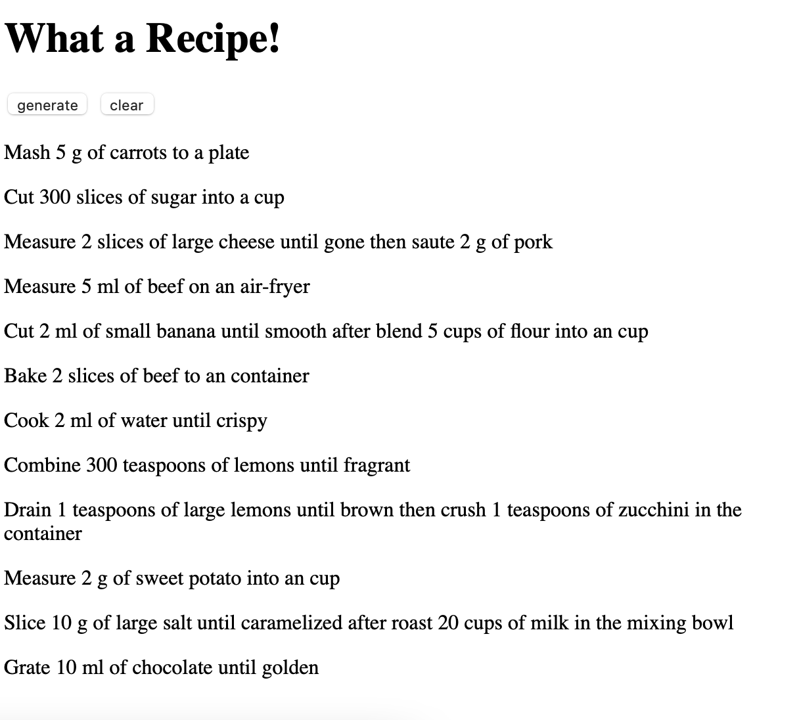
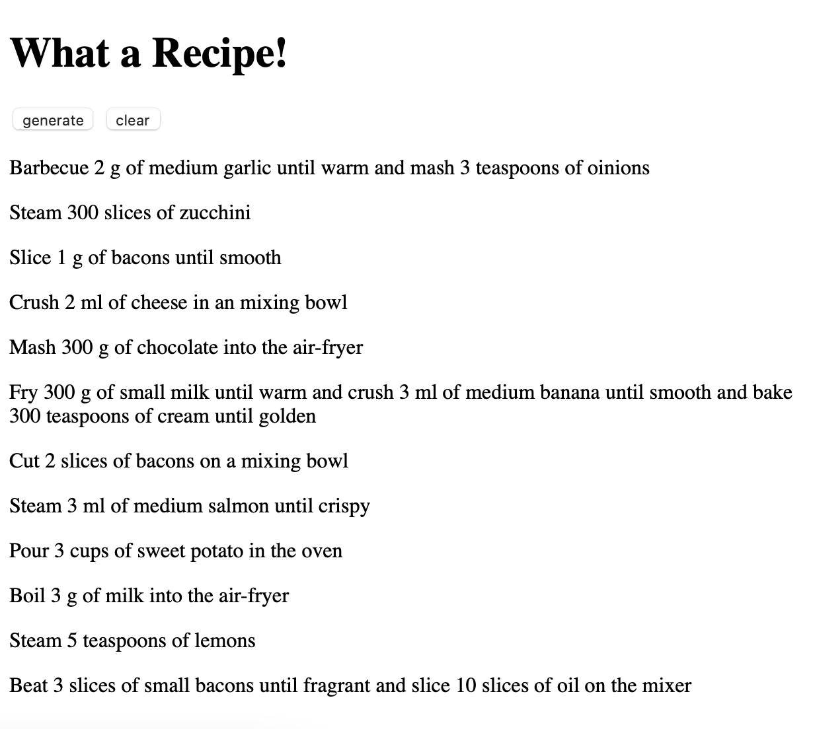
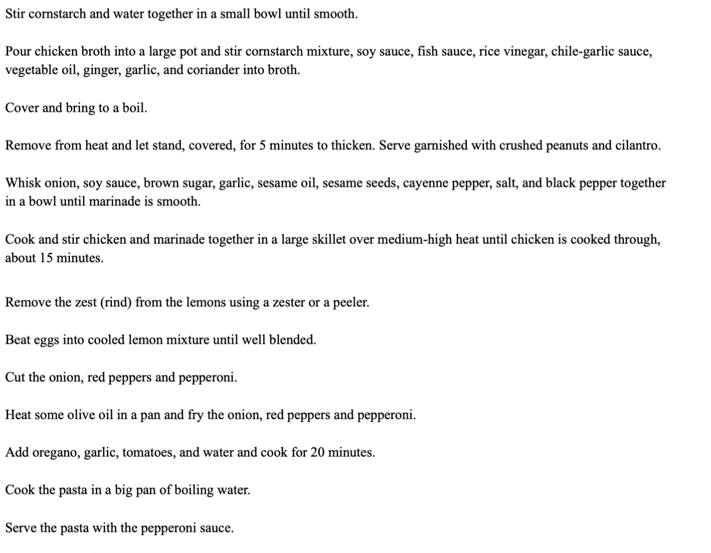

Author: Soojin Lee Date: 4, Nov, 2021
| Context Free Grammars
Wikipedia defines context-free grammar as (CFG) a formal grammar whose production rules are of the form
A --> α
with A a single nonterminal symbol, and α a string of terminals and/or nonterminals (α can be empty). A formal grammar is "context free" if its production rules can be applied regardless of the context of a nonterminal. No matter which symbols surround it, the single nonterminal on the left hand side can always be replaced by the right hand side. This is what distinguishes it from a context-sensitive grammar.
For this week, I read these two websites to experiment on generating text with a Context Free Grammar.
The two websites I used to learn more about CFG are:
| Experimenting with CFG
What a Recipe!
Adapting
CFG example, I created a program that uses CFGs to generate recipe instruction. Here are some of the texts generated using
What a Recipe Program.
Click
here to access the project.
I chose to write a recipe instruciton with CFG because recipe instruction texts have orders and rules. For example, it starts with a verb such as: mix, fry, boil, cut, chop, and etcetera, followed by a food item and so on.
Below are the clauses and the terminals I created for this CFG system.

It was simply so hilarious and fun to read all these recipe texts. Many of the the recipe it generates are non-sensical yet still possible. With past experiences, we know that it makes no sense to cook 2ml of water until crispy. However, without this knowledge, this sentence is grammatically correct.
| Process

I have started with studying recipe texts. Here are some of the recipe instruction texts I collected from the
recipe website to study the patterns and rules within the recipe instructions. I then created my own formula for cooking instruction based on the investigation.

A Formula for Cooking Instruction
In extension of this formula, I have created clauses and terminals.
Clauses
# clauses
S -> V NUFQ
NUFQ -> N U of F
NUFQ -> N U of QF
NUFQ -> N U of FQ #Q indicates it it not terminal
NUFQ -> N U of FPQ
FQ -> F until R
FQ -> F until RQ
QF -> SC F until R
QF -> SC F until RQ
RQ -> R M VQ
VQ -> transV NUFQ
FPQ -> F PP A P
Terminals
# Start Verb
V -> Add | Bake| Barbecue | Beat | Blend | Boil | Pour | Chop | Combine | Cook | Crush | Cut | Drain | Fry | Grate | Measure | Peel | Roast | Saute | Slice | Steam | Stir-fry | Wash | Mash
# Transitional Verb
transV -> add | bake| barbecue | beat | blend | boil | pour | chop | combine | cook | crush | cut | drain | fry | grate | measure | peel | roast | saute | slice | steam | stir-fry | wash | mash
# Number
N -> 3 | 2 | 20 | 300 | 1 | 5 | 10
# Unit
U -> g | ml | cups | teaspoons | slices
# Time
T -> minute(s) | hour(s) | second(s) | overnight
# PrePosition
PP -> into | on | in | to
# More
M -> and | then | after
# a the an
A -> the | a | an
# Adjective
ADJ -> fresh | red | defrosted | spicy | delicious | ground | melted | finely grated | shredded | mini | sweet | cold | dried | rolled | precooked | smooth
# Food
F -> beef | oinions | chocolate | flour | beans | eggs | milk | garlic | chicken broth | lemons | spinach | salt | pepper | oil | carrots | cheese | tomatoes | bacons | salmon | jalapeno | zucchini | sweet potato | mushroom | cream | banana | sugar | pork | beef | chicken breast | oats | water | sauce
# Scale
SC -> small | medium | large
# Place
P -> mixing bowl | oven | container | cup | non-stick frying pan | microwave | plate | air-fryer | chopping board | mixer
# Result
R -> golden | brown | caramelized | fragrant | gone | thicken | warm | crispy | smooth
Reflection & Evaluation
I have enjoyed working on this project. The process of was like solving a puzzle, which I love doing. I did not draw a tree branch diagram as I was creating a formula, but to make a more sophisticated text generator with more variations, the tree branch diagram would be really helpful to visualize possibilities and variations.
I am considering expanding on this to build the final project about a recipe generator bot that gives a recipe based on the food item that people already have at home. To briefly explain, people can type in the food items that are available at home and the bot will create a recipe for them using the inputs. I think it would be really interesting project to work on but I also see the potential of it being super useful for people daily about "what should I cook for dinner?".